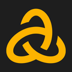
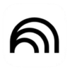

La mejor selección de apps y webs.
Herramientas top para estudiar menos, entender más y tener apuntes de 10.
Perplexity
Buscador con IA que responde tus dudas citando fuentes reales y fiables al momento.
Gemini
La IA de Google para analizar documentos, resolver dudas lógicas y organizar tus sesiones de estudio con precisión.

Astra AI
Tu tutor personal de IA para resolver dudas académicas complejas y explicar conceptos difíciles paso a paso.

NotebookLM
Analiza tus propios apuntes y PDFs con esta IA de Google que genera resúmenes, guías de estudio y podcasts explicativos.